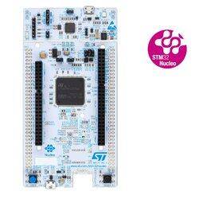
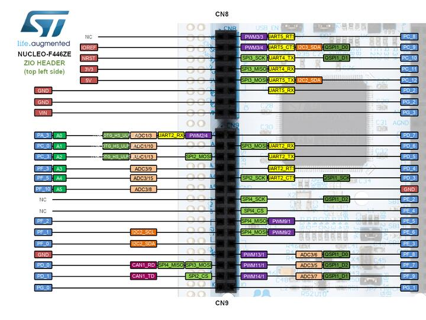
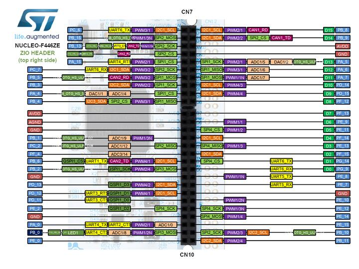

Gyakorlati beágyazott programozás STM32 Nucleo-F446ZE (Nucleo-144) kártyákon az ipari szabvány STM32CubeIDE környezetben a Kristálytiszta Elektronika 2 tananyaga alapján.
A laboratórium hivatalos hardvere, 144 lábú kiosztás, ST Zio és Morpho csatlakozók, periféria térkép

A laboratórium során használt nagy teljesítményű, 144 lábú STM32 Nucleo-144 fejlesztőkártya, amely széleskörű csatlakozási lehetőséget nyújt Arduino™ Uno V3 kompatibilis ST Zio és teljes hozzáférést biztosító ST Morpho csatlakozókkal.
Válassz nézetet a csatlakozótüskék vagy a periféria lábak böngészéséhez:


Gyakorlati előírások, jelenléti szabályok és a laboratórium rendje
A legelső laborfoglalkozás alkalmával kötelező aláírni a munkavédelmi jegyzőkönyvet.
A félév során kérjük, hogy mindenki mindig ugyanahhoz a géphez üljön!
A laborgyakorlatokon való részvétel a tantárgy teljesítésének alapfeltétele.
A félév során minden laborra külön jegyet kapsz (1–10)!
A Sapientia EMTE romániai felsőoktatási osztályozási rendszere szerint
| Komponens | Súly | Részletek (1–10 skála) |
|---|---|---|
| Előadás Jegy | 50% | Elméleti vizsga / zárthelyi dolgozat eredménye. |
| Laboratóriumi Jegy | 50% |
Két komponensből áll össze:
Labor = (Heti Átlag + Mini Projekt) / 2
|
| Végső Féléves Jegy | 100% | Végső = (Előadás × 0.5) + (Labor × 0.5) |
3-4 megismert modul összekapcsolása egy működő beágyazott rendszerben
A félév végén a heti laborokon megismert perifériák közül legalább 3-4 modult felhasználva kell önállóan működő mini projektet tervezni és megvalósítani. A cél annak bizonyítása, hogy az egyes perifériák konfigurálását és vezérlését képes vagy egyetlen összehangolt C szoftverré integrálni.
Összetevők: Analóg bemenet (potméter vagy analóg fény/hőmérséklet szenzor ADC-vel) → Állapot és mért értékek kiírása LCD/OLED kijelzőre → PWM kimenet vezérlése (LED fényerő vagy DC ventilátor fordulatszám szabályozása).
Összetevők: Valós idejű óra (RTC) → I2C/SPI digitális környezeti érzékelő (hőmérséklet, páratartalom) periodikus olvasása → Időbélyeges adatok megjelenítése kijelzőn vagy UART terminálon keresztüli naplózás.
Összetevők: Kijelző (OLED / LCD grafikus megjelenítés) → Analóg potméteres ütőpozíció (ADC) → Időzített labdamozgás (Timer megszakítás) → Pontszerzéskor hang- vagy LED visszajelzés.
A 12 laboratóriumi fejezet témakörei és feladatai
Munkavédelmi aláírás! CubeIDE projektstruktúra, moduláris forráskezelés (.c/.h és include útvonalak), CubeMX konfiguráció és ST-Link programozás.
Digitális be- és kimenetek, LED futófény, nyomógomb beolvasása, szoftveres pergésmentesítés és 4 bites bináris számláló.
Szinkron soros buszok (I2C & SPI), TSL2561 digitális fénymérő szenzor kiolvasása (Simple és Memory mód), fényszint jelzése LED-eken.
HMI eszközök, SSD1306 grafikus I2C OLED kijelző (128x64) meghajtása, memóriabeli képernyőpuffer, betűkészletek és alakzatok rajzolása.
Aszinkron kommunikáció (UART, CAN, USB), kétirányú UART adatátvitel és heartbeat jelzés, virtuális USB HID egér vezérlése gombokkal.
Analóg feszültségmérés 12 bites SAR ADC-vel, potenciométer beolvasása blokkoló (polling) és megszakításos (IT) módban, szoftveres átlagolás.
Digitális-analóg átalakítás (DAC), fix analóg feszültség mérése multiméterrel, 100 pontos szinusz Look-Up Table szoftveres és timeres generálása.
Szenzortípusok és átviteli karakterisztikák, I2C környezeti szenzorok (APDS9300 fénymérő, LM75A hőmérő, HIH8120 páratartalom) és OLED megjelenítés.
Kalibráció elmélete, NTC termisztoros feszültségosztó mérése ADC-vel, egypontos (zéruspontos) kalibrációs állapotgép megvalósítása jégvízzel és OLED kijelzővel.
Hardveres számlálók és időzítők, precíz 1 Hz-es periodikus megszakítás LED villogtatáshoz, független Watchdog Timer (IWDG) védelem.
RTC naptár- és óraperiféria LSE kristályról (32.768 kHz), BCD kódolás, komplett ébresztőóra állapotgép kezelőgombokkal (EXTI) és OLED-del.
Villamos gépek elve, DC mikromotor vezérlése BD6211F H-híddal (PWM és analóg DAC mód), kvadratúra enkóder feldolgozása és fordulatszámmérés.
Hogyan dolgoztok a saját repótokban és hogyan adjátok le a heti feladatot a jegyért
A repó már tartalmazza az összes heti labor (Labor 01 – Labor 12) teljes feladatsorát és tananyagát! Hozz létre egy saját privát (Private) repót a GitHub fiókodon mcu-labor-2026 néven, és add hozzá az oktatót Collaboratorként:
git clone https://github.com/szigetipeter/labor_mikroprocesszorok.git mcu-labor
cd mcu-labor
git remote rename origin upstream
git remote add origin https://github.com/FELHASZNALONEVED/mcu-labor-2026.git
git push -u origin main
Az adott héten csak nyisd meg az aktuális labor mappáját (pl. labor_02). Olvasd el a README.md feladatleírást és a mellékelt PDF tananyagot. Hozz létre egy új CubeIDE projektet a kártyádhoz, konfiguráld a hardvert, és írd meg a C kódot!
A megírt CubeIDE projektet az adott heti mappába mentve commitold és pushold a saját GitHub repódba a határidő előtt:
git add .
git commit -m "Labor XX feladat megoldva"
git push origin main